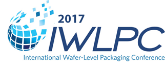

Wafer Thinning for Advanced Packaging Applications
Page 17
Die attach solutions
3D metrology challenges
HVM of chip-on-submount
3D capacitors for on-chip integration
OSATs: Challenges for revenue growth
Performance and cost for 2.5D packaging
TSV technologies for next-gen application challenges
High-density advanced packaging solutions for today’s OSATs & foundries
Current Issue
Subscribe NowJuly • August 2017; Volume 21, Number 4
Cover PhotoInside the WaferStorm® Precision Surface Processing System, a 200mm silicon wafer on an automated handler moves toward the proprietary ImmJET™ heated immersion and a high pressure spray chamber. Using a single-wafer wet etch process for wafer thinning, the solvent techniques and advanced process control provide a low-cost alternative to chemical mechanical polishing and plasma dry etch processes for advanced packaging applications.
Cover photograph courtesy o f Veeco Instruments Inc.
Read the issue Download PDF Subscribe
Industry News
MRSI Systems Launches High Speed Die Bonder for Photonics High Volume Manufacturing
North Billerica, MA, USA, August 14, 2017 - MRSI Systems, a leading manufacturer of fully automated, ultra-precision, high speed die bonding and epoxy dispensing systems, is launching a new High Speed Die Bonder, MRSI-HVM3, to support our photonics customers’ high volume manufacturing requirements. The MRSI-HVM3 is in full production and we are shipping to customers worldwide. ...>>Nanusens solves the problem of stiction in MEMS inertial sensors by going smaller and creating nano-sensors in standard CMOS
Barcelona, Spain - August 3, 2017 - Nanusens has announced that its CMOS nano-sensor technology has been successfully used to solve the problem of stiction in MEMS inertial sensors, which is a major source of failure for this type of sensor."Our first silicon nano-sensor samples from GLOBALFOUNDRIES exceeded our expectations showing outstanding resilience to stiction, with the devices going through more than 10,000 switching cycles, each equivalent to more than 1000G shocks," explained Nanusens' CEO, Dr Josep Montanyà i Silvestre. "And the sensitivity is an order of magnitude above what is needed for a motion sensor in most applications." ...>>
EV GROUP CELEBRATES 20 YEARS OF SUPPORTING MICRO- AND NANO-TECHNOLOGY DEVELOPMENT IN JAPAN
St. Florian, Austria, August 2, 2017 - EV Group (EVG), a leading supplier of wafer bonding and lithography equipment for the MEMS, nanotechnology and semiconductor markets, today announced that it is celebrating the 20th anniversary of its wholly owned subsidiary in Japan, EV Group Japan KK.Established in August 1997 in Yokohama, EV Group Japan has since expanded its presence to include offices in Fukuoka and a state-of-the-art applications lab in Yokohama for process and product demonstrations, as well as increased the number of employees in the country by nearly three-fold. ...>>Woodside Capital Partners and Yole Développement announce a joint venture agreement to expand their market research expertise
LYON, France – August 1, 2017: Woodside Capital Partners International LLC, a global, independent investment bank and Yole Développement SA (Yole) announce a joint venture. Yole will serve as a research partner for Woodside Capital’s M&A advisory practice, which provides strategic and financial advice to emerging growth companies in the technology sector. ...>>TechSearch International Analysis Examines FO-WLP Developments and Sensor Packaging Trends
Austin, TX - July 19, 2017 - Mobile devices, specifically smartphones, represent the single greatest volume driver for MEMS and other sensors today. Sensors found in these products include electronic compasses, motion sensors, barometers, microphones, and fingerprint sensors. Package types include land grid arrays (LGAs,), leadframe packages such QFNs, and wafer level packages (WLPs.). Apple is expected to account for 28 percent of the total smartphone sensor market as a result of increased sensor adoption. With the trend toward smart factories, industrial applications are also expected to account for increased sensor demand. ...>>Toshiba Memory Corporation Develops World's First 3D Flash Memory with TSV Technology
July 11, 2017 - Tokyo, Japan --(BUSINESS WIRE)--Toshiba Memory Corporation, the world leader in memory solutions, today announced development of the world’s first[1] BiCS FLASH™ three-dimensional (3D) flash memory[2] utilizing Through Silicon Via (TSV)[3] technology with 3-bit-per-cell (triple-level cell, TLC) technology. Shipments of prototypes for development purposes started in June, and product samples are scheduled for release in the second half of 2017. The prototype of this groundbreaking device will be showcased at the 2017 Flash Memory Summit in Santa Clara, California, United States, from August 7-10. ...>>Industry Events
Diving into MEMS, Sensors and Imaging Technologies for a Smart, Connected World at SEMI|MSIG European Summit
GRENOBLE, France ─ August 25, 2017 – STMicroelectronics CEO Carlo Bozotti will kick off SEMI® and MEMS & Sensors Industry Group®’s (MSIG) co-located European MEMS & Sensors Summit 2017 and European Imaging & Sensors Summit (September 20-22 in Grenoble, France) with his keynote on the next wave of sensors and actuators in smart connected devices. CEA-Leti CEO Marie Noelle Semeria will share her vision on the future of image sensing combined with other innovative sensors for augmented reality (AR) and virtual reality (VR). EON Reality CEO Mats Johansson will explore pervasive and contextual AR and VR. Fraunhofer Institute for Photonic Microsystems (IPMS) Director Hubert Lakner will discuss the creation of a new cooperative German research fab that will strengthen the European microelectronics industry. These are just a few of the European technology leaders who will consider how MEMS, sensors, and imaging technologies are advancing the human experience with diverse applications in every imaginable technology sector. ...>>
The International Microelectronics Assembly and Packaging Society (IMAPS)
50th Annual International Symposium on Microelectronics
Raleigh, North Carolina - October 9 -12, 2017 - The International Microelectronics Assembly and Packaging Society (IMAPS) will host the 50th Annual International Symposium on Microelectronics at the Raleigh Convention Center. You will find IMAPS 2017 a balancing between emerging, new and mature topics, and a large cross-section of vendors exhibiting their products and technologies in the exhibition hall.
...>>
SEMI European MEMS & Sensors Summit 2017
20-22 September • Grenoble, France
“Sensing the world”, SEMI Europe Imaging & Sensors Summit 2017 is the event highlighting the latest developments and applications in the fast-growing market of imaging and sensors design and manufacturing. Each session will provide vision and information on current and next-generation products, processes, and solutions driving the success of imaging applications forward.
...>>

International Wafer-Level Packaging Conference (IWLPC) Program Announced and Registration Now Open
Minneapolis, MN - July 19, 2017 - The SMTA and Chip Scale Review are pleased to announce the program for the 14th annual International Wafer-Level Packaging Conference. The IWLPC will be held October 24-26, 2017 at the DoubleTree by Hilton Hotel in San Jose, California. ...>>
<%- data.ads %>